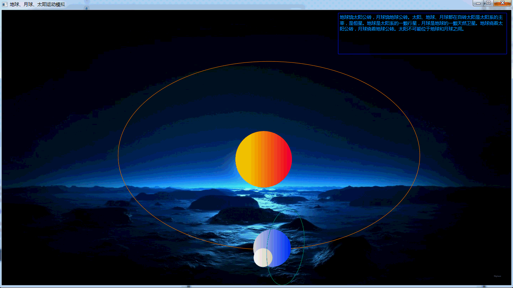
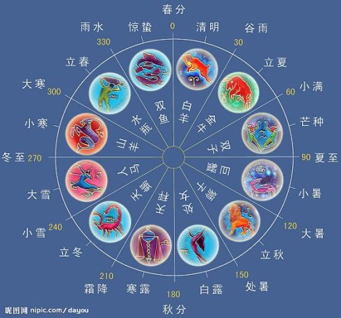

二十四节气 精简
世界非遗： 中国传统 - 二十四节气
NOTE: PPT
什么是二十四节气
《二十四节气歌》
春雨惊春清谷天，夏满芒夏暑相连。
秋处露秋寒霜降，冬雪雪冬小大寒。
每月两节不变更，最多相差一两天。
上半年来六廿一，下半年是八廿三。
- “二十四节气”是中国古人通过观察太阳周年运动，认知一年中时令、气候、物候等方面变化规律所形成的知识体系。
- 中国古人将太阳周年运动轨迹划分为24等份，每一等份为一个“节气”，统称“二十四节气”。
- 它不仅是农耕社会人们生产生活的重要指南，它也体现了中国人对自然时序的一颗敬畏之心。
中国的第五大发明
- 在国际气象界，这一时间认知体系被誉为“中国的第五大发明”。
- 2016年“二十四节气”被正式列入联合国教科文组织人类非物质文化遗产代表作名录。
- 随着中国城市化进程加快和现代化农业技术的发展，“二十四节气”对于农事的指导功能逐渐减弱。
- 为了保护“二十四节气”，我们需要吸引更多的年轻人加入到传承与保护的行列中来，激发其积极性和自觉性，使“二十四节气”这一重要的文化遗产在当代社会文化生活中焕发出新的活力。
二十四节气的来历

- 二十四节气起源于黄河流域。
- 远在春秋时代，就定出仲春、仲夏、仲秋和仲冬等四个节气。秦汉年间，二十四节气已完全确立。
- 现在世界通行的历法是阳历，阳历根据地球绕太阳公转一周所需时间计算，
- 这一周一共是 365 天 5 小时 48 分 46 秒，为方便以365 天做为一年，
- 每隔四年设一个闰月，使原本 28 天的二月增加为 29 天。

- 华人更多采用“农历”，“农历”又称“阴历”，是我国民间传统节令，是中华民族古老文明和智慧的结晶。
- 阴历则是以月亮的圆缺变化周期作为计算单位，这个周期大致是 29 天 12 小时 44 分 4 秒左右，因此大月30天，小月29天，
- 真正的阴历一年只有 354 天，比阳历少 11 天，为了使它能够符合天气冷热变化的周期，每隔二年或是三年就得多增加一个月，称为“闰月”。

- 古代天文学家早在周朝和春秋时代就用“土圭”测日影法来确定春分、夏至、秋分、冬至，
- 并根据一年内太阳在黄道（即地球绕太阳公转的轨道）上的位置变化和引起的地面气候的演变次序，将全年平分为二十四等份。

- 太阳从春分点（黄经零度，此刻太阳垂直照射赤道）出发，每前进15度为一个节气；
- 运行一周又回到春分点，为一回归年，合360度，因此分为24个节气。

- 春分和秋分昼夜平分，夏至昼最长（北半球，下同），冬至昼最短，
- 春分、秋分、夏至和冬至是古人最初确立的气。其后加入的是立春、立夏、立秋和立冬。
2019年二十四节气准确时间
二十四节气的说明
- 立春：每年的2月4日或5日，谓春季开始之节气。

春节
《元日》宋 - 王安石
爆竹声中一岁除，春风送暖入屠苏。
千门万户曈曈日，总把新桃换旧符。